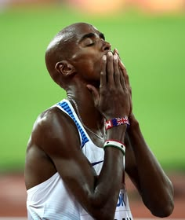

R
首頁
名鑑
介紹
傳奇跑者系列
跑者無懼
每個起點背後，都是一個不被挫敗擊倒的故事。

傳奇名鑑
Eliud Kipchoge
史上最偉大馬拉松跑者
向世界證明人類能在兩小時內完成馬拉松的肯亞傳奇。
身世與經歷：
出生肯亞高地農村，由母親撫養長大。受教練 Patrick Sang 啟發開啟長達18年的師徒情誼。
努力與挫敗：
2012年落選倫敦奧運資格後轉戰馬拉松，這項決定改變了一生。他在前11場比賽中贏得10場。
最佳成績：
柏林馬 2:01:39 世界紀錄，Breaking2 計畫跑出 2:00:25。
展開故事
Justin Gallegos
腦性麻痺職業跑者
「世界上沒有所謂的殘疾。」打破身體限制的跑者。
身世與經歷：
患有腦性麻痺，五歲前需依賴助行器，學習走路對他而言都極其困難。
努力與挫敗：
高中開始跑步以增強體能，起初經常摔倒但從未放棄。與 Nike 合作開發專屬支撐跑鞋。
最佳成績：
2018年完成半程馬拉松（21公里），目前正挑戰全程馬拉松夢想。
展開故事
Mo Farah
英國國家寶藏 / 長跑之王
從非法販運童工到大英帝國爵士，寫下最動人的逆境劇本。
身世與經歷：
原名 Hussein，九歲時遭非法販運至英國淪為童工。直到體育老師發現天賦才迎來轉機。
努力與挫敗：
克服身分問題與文化隔閡，在14歲透過請願取得英國身分，正式開啟田徑之路。
最佳成績：
多面奧運 5000/10000 公尺金牌，田徑史上最成功的長距離跑者之一。
展開故事
Sifan Hassan
全方位天才 / 逆轉女王
即便跌倒也要爬過終點，史無前例的跨距離獎牌得主。
身世與經歷：
衣索比亞出生，15歲以難民身分逃往荷蘭。在求學期間開始接觸跑步。
努力與挫敗：
以驚人毅力著稱。東京奧運重摔後爬起奪冠；巴黎奧運包攬5000/10000銅牌後，更奪下馬拉松金牌。
最佳成績：
一英里 4:12.33 紀錄保持者。巴黎奧運馬拉松以破紀錄成績奪金。
展開故事